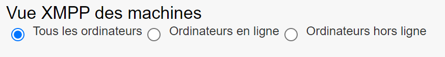
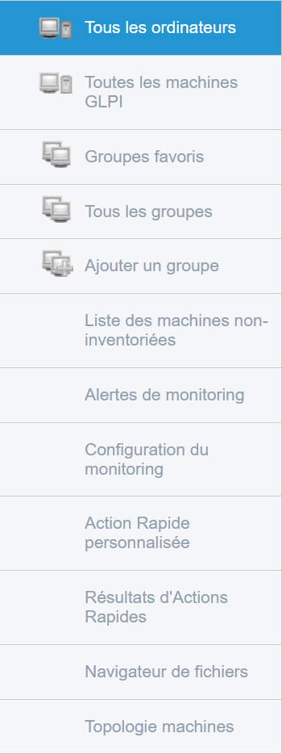
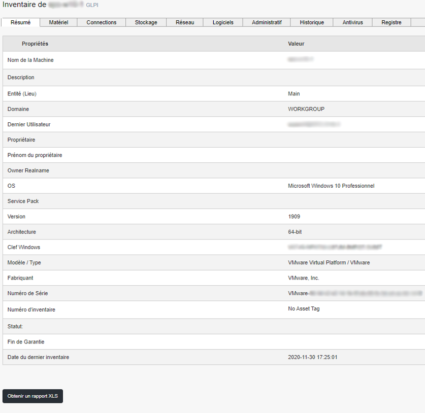
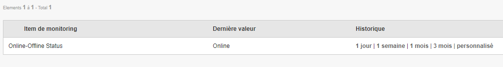

Computers Menu¶
This section concerns the different parts of the Computers menu in the Medulla tool.

On the main screen under the menu bar, we can filter the view, for example, if we want to see all computers on the list or only online or offline computers.

When we access the Computers menu on the main screen, we find the menu bar with the different workstations listed. In the above screenshot, we see one workstation. On the left side of the screen, we find a menu with different sub-menus that make up the Computers menu.

All computers: Displays the machines present in Medulla; All GLPI machines: Displays the machines present in GLPI; Favorite Groups: Displays favorite computer groups; All groups: Displays all computer groups; Add a group: Allows adding a computer group; List of non-inventoried machines: Displays computers absent from the inventory; Monitoring Alerts: Displays monitoring alerts; Monitoring Configuration: Configures monitoring alerts; Custom Quick Action: Lists custom quick actions; Quick Action Results: Displays quick action results; File Browser: Opens the file browser; Machines Topology: Provides a view by machine topology.
The Computers view allows you to have the complete list of machines with the ability to see what each machine possesses by clicking on it. It is also from this view that operations can be performed on the machines via the action menu.
If we click on the Expert mode, a function is added: « Wake-on-LAN »

Wake-on-LAN allows turning on a machine using its MAC address.
Now let’s review the different actions available in the Computers view for each machine:
Icon |
Action Name |
Action Description |
|---|---|---|

|
Inventory |
View the machine’s inventory |

|
Monitoring |
Retrieve monitoring graphs |
Backup |
View the machine’s inventory |
|

|
Remote Desktop |
Take control of the machine in various ways (ssh, rdp, vnc, cmd) |
Software Deployment |
Deploy a package |
|

|
Imaging |
Access the imaging menu |

|
Quick Actions |
Launch a quick action on a machine |
File Explorer |
Explore the defined folder of the computer |
|
Delete |
Remove a machine from Medulla |
In Expert mode, we find the menu with three additional functions listed below:
Icon |
Action Name |
Action Description |
|---|---|---|

|
File Viewing |
View the retrieved file on the server |

|
XMPP Console |
Allow certain commands directly from the server or a computer. |
Editing Agent Configuration Files |
Configure options for the computer’s agent configuration files. |
Inventory¶

The goal of the inventory is to have precise knowledge of its IT infrastructure. Once the inventory agent is installed on the client workstations, Medulla automatically compiles and, based on the inventory agent configuration, generates an inventory status. These reports are then used to display statistics on the dashboard and alert the system administrator about workstations that are not up to date in their inventory. This inventory will be directly fetched from the GLPI database. We will find in the inventory several tabs separating the inventory according to type: hardware, connections, storage, network, software, administrative, historical, antivirus, registry. Scripts to improve consistency are provided with Medulla.
Warranty¶
For manufacturers who offer a warranty management API, a link is formed and directly points to the manufacturer’s page.

Example Dell link: https://www.dell.com/support/home/fr-fr/product-support/servicetag/0-cksrVUVkKzlCZDF3QmhKRkhjb1RBZz090/overview
APIs change regularly, it is possible to customize the links in the configuration file of the GLPI plugin (located in /etc/mmc/plugins/glpi.ini.local)
# Manufacturer warranty infos
# @@SERIAL@@ keyword will be replaced by computer’s serial
# When type = post, params will be posted, by default params are
# get params for the url.
[manufacturer_dell]
url = http://www.dell.com/support/my-support/us/en/19/product-support/servicetag/@@SERIAL@@/warranty
[manufacturer_dell_fr]
url = http://www.dell.com/support/my-support/fr/en/19/product-support/servicetag/@@SERIAL@@/warranty
params = l=fr
[manufacturer_lenovo]
url = http://support.lenovo.com/templatedata/Web%20Content/JSP/warrantyLookup.jsp
type = post
params = sysSerial=@@SERIAL@@
#[manufacturer_hp]
#url = http://h20566.www2.hp.com/portal/site/hpsc/public/wc/home/
#type = post
#params = serialNumber0=@@SERIAL@@
[manufacturer_fujitsu]
url = http://sali.uk.ts.fujitsu.com/ServiceEntitlement/service.asp
params = command=search&snr=@@SERIAL@@
[manufacturer_toshiba]
url = http://aps2.toshiba-tro.de/unit-details-php/unitdetails.aspx
params = serialNumber=@@SERIAL@@
[manufacturer_apple]
params = serialno=@@SERIAL@@
Monitoring¶
The monitoring feature is based on the Grafana monitoring tool. If you click on the Monitoring action, the list of graphs is displayed:

In my case, I only have one monitoring item.
The display of the last value depends on the graph. This value is displayed for the Online